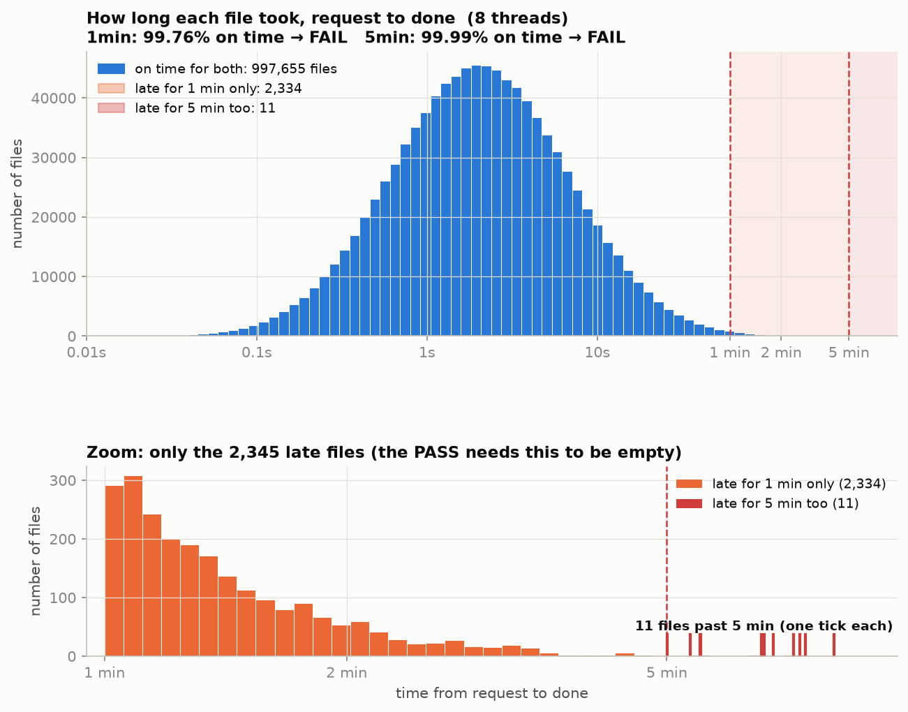
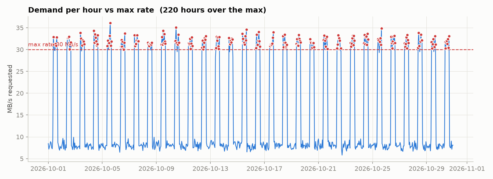
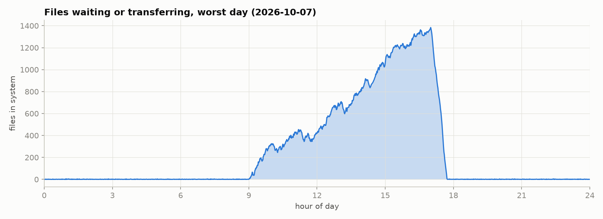
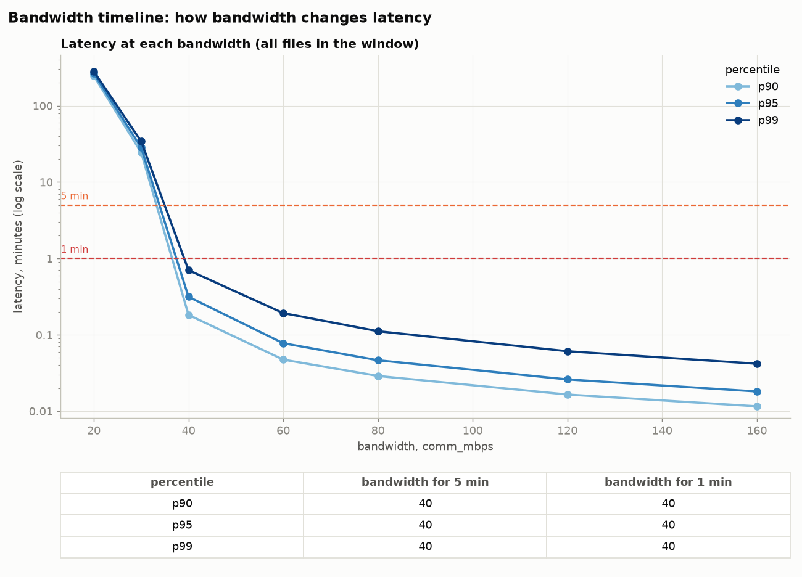
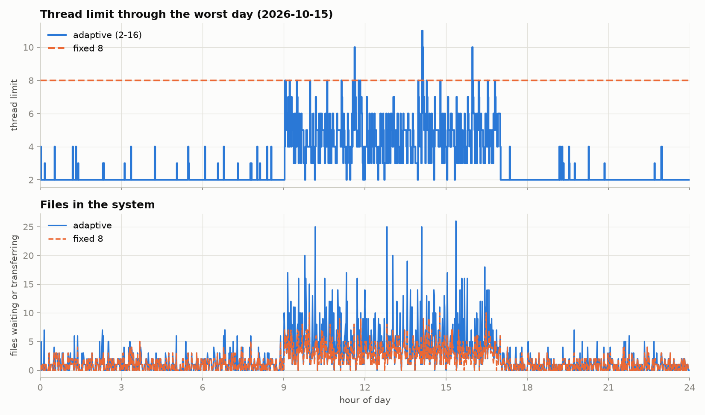
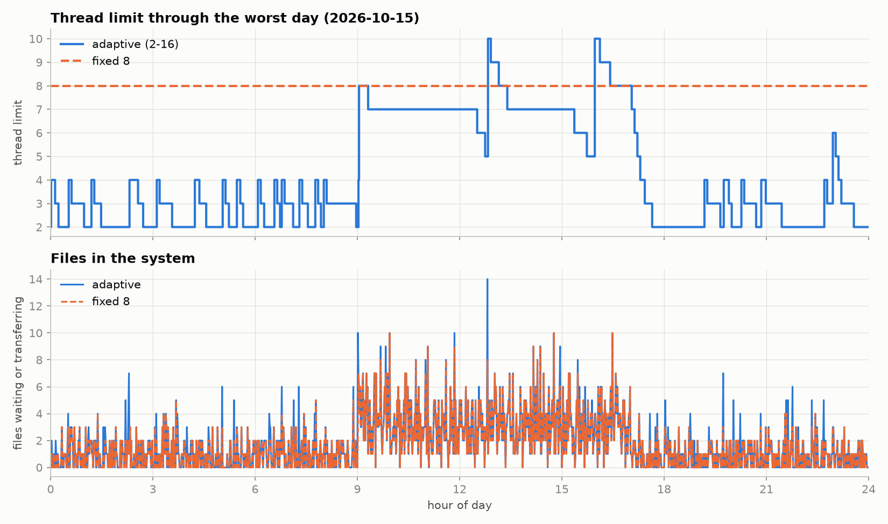

New to NAPM? Start at module 0 for the basics. Then ten short modules, from "what is this" to tuning threads automatically. Each one has a goal, a picture, and the detail tucked behind + toggles. Tick a module off when you can answer its check question.
Goal: explain NAPM to someone new in two minutes, with no code.
NAPM is the system that moves files from one place to another over FTP. Something asks for a file to be sent; NAPM queues the request, sends it as soon as a transfer slot is free, and records when it started and finished. Files range from tiny (a fraction of a MB) to huge (15 GB), and requests arrive all day, sometimes in bursts.
The question this project answers: with a given setup, does every file arrive within 1 minute, or within 5 minutes, of being asked for?
What the letters N-A-P-M stand for isn't confirmed yet; this guide only needs what it does.
Every transfer goes through the same three moments. The data records them as columns.
| Moment | What happens | In the data |
|---|---|---|
| Request | Someone asks for the file. The clock for 1 min / 5 min starts here. | request_time (always there) |
| Start | A free transfer slot picks the file up. Before this, it waits in line. | start_time (some sites only) |
| End | The last byte arrives. | end_time (some sites only) |
Total time = end − request = waiting + transferring. The waiting part is why a small file can still be late: it was stuck in line behind big ones.
Think of a highway: lanes, a speed limit per lane, and a bridge at the end that can only carry so much traffic in total.
Each busy lane goes at its speed limit, unless the lanes together would overload the bridge. Then they split the bridge evenly.
speed of each busy transfer = the smaller of (per-thread rate) and (max rate ÷ busy transfers)
| Max 1000, per-thread 200 | Each transfer gets | Total used |
|---|---|---|
| 2 busy | 200 MB/s | 400 |
| 5 busy | 200 MB/s | 1000 (bridge full) |
| 10 busy | 100 MB/s | 1000 (split ten ways) |
So past max ÷ per-thread (here 5) extra lanes don't add speed. They let more files start sooner, but each one goes slower.
Each cause has its own fix: more threads, a bigger max rate (or spreading the burst out), or a faster per-thread rate. Picking the wrong one wastes money and doesn't help, which is why this project exists.
It tries a setup on last month's traffic in seconds, without touching the real system. Where start and end times exist, they show what really happened, so the simulator can be checked against it.
| file size | request | start | end | Total | 1 min / 5 min |
|---|---|---|---|---|---|
| 120 MB | 14:03:15 | 14:03:15 | 14:03:16 | 1s | on time / on time |
| 40 MB | 14:03:20 | 14:04:35 | 14:04:36 | 76s | late / on time |
| 9 GB | 14:05:00 | 14:05:01 | 14:06:16 | 76s | late / on time |
Row 2 was small but waited 75s for a free lane. Row 3 started right away but was too big to finish in a minute. Same lateness, two different fixes.
Goal: say in one sentence what the simulator does.
Every row in your data is one file transfer request: "send this 120 MB file, asked for at 2:03:15pm." The simulator replays those requests through a fixed number of FTP threads (lanes) and records when each file would finish. Then it asks: did the slowest files still finish in time?
One-sentence version: it's a replay of real requests through a pretend NAPM setup, so you can test settings without touching the real system.
| Word | Meaning |
|---|---|
| Thread / concurrent FTP | One transfer lane. N threads = up to N files moving at once. |
| Per-thread rate | Fastest one thread can move data, e.g. 10 MB/s. |
| Max spec rate | Total cap for all threads together, e.g. 80 MB/s. |
| Wait time | Time in the queue before a thread picks the file up. |
| Transfer time | Time actually moving bytes. |
| Latency | Wait + transfer = done − request. This is what's graded. |
| SLA | The time limit: 60s (1 min) or 300s (5 min). |
| Load / utilization | Demand ÷ max rate. 50% = asking for half of what the pipe can carry. |
| Warm-up | The hour before your window that's simulated but not graded. |
It isn't the real NAPM and doesn't send files. It doesn't know about network errors, retries, disk speed, or priorities unless we add them. It's a model: useful to compare settings, and trustworthy once its output matches what really happened (module 6).
Goal: read "1min: 99.76% on time (2,345 late) FAIL" and know exactly what it means.
Example: 10 files finished in these times (seconds from request), sorted:
2 3 3 4 5 6 8 12 20 95
Each file is checked on its own: did it finish within 60s (1 min) or 300s (5 min) of being requested? Here 9 of 10 made 1 min, and all 10 made 5 min.
The run passes a limit only when every file finished within it. In the example: 1 min fail (one file took 95s), 5 min pass. Same thing, said another way: the slowest file has to be within the limit.
The rule lives in src/transport_sim.py: SLAS holds the two limits (60, 300) and
TARGET = 100.0 is the % that must be on time.

Averages hide the files people complain about. In the example above the average is 15.8s, which looks fine, but one file took 95s. Counting late files catches it.
| Meaning | In the tool? | |
|---|---|---|
| A | Each file done within 5 min of its request | yes |
| B | Everything requested in a 5-min window done before the next one | not yet |
| C | The simulation program itself runs under 5 min | always (about 1.5s on 1M rows) |
Goal: predict how fast each thread runs for any setting.
The one formula. When k threads are busy at the same moment, each one runs at:
speed per busy thread = min( per-thread rate , max rate ÷ k )
| Busy threads (k) | max ÷ k | Each runs at | Total |
|---|---|---|---|
| 2 | 40 | 10 (own cap) | 20 MB/s |
| 8 | 10 | 10 | 80 MB/s, pipe full |
| 16 | 5 | 5 (shared) | 80 MB/s, pipe full |
Goal: know why the busiest hour matters more than the average.
Think of a toll plaza. At 50% busy, cars rarely wait. At 90%, a small burst causes a line that takes a long time to clear. Above 100%, the line only grows until traffic drops, no matter how many booths you open, if they all share one road out.


Keep the busiest hour under about 70–80% of max rate. Wait times don't grow in a straight line; they shoot up
as load approaches 100%. Roughly, average wait scales like load ÷ (1 − load): 50% → 1×, 80% → 4×, 90% → 9×, 95% → 19×.
Little's law: files in system = arrival rate × average time in system. If 2 files/s arrive and each spends 5s, about 10 are in the system at any moment. Handy for sanity-checking the queue chart.
Goal: trace 4 files by hand and get the same answer as the program.
CSV ─► load() keep date window (+1h warm-up, not graded)
─► main() pre-checks: load %, busiest hour %, min per-thread speed
─► run() timestamps → seconds, pick a model
├─ simulate() fixed speed per thread ("even")
├─ simulate_shared() threads share the max rate (default)
└─ simulate_adaptive() thread limit moves with traffic (module 8)
─► report() latency → % on time per limit → PASS only if every file made it
| File | Requested | Size | Simple model | Shared, max 15 MB/s |
|---|---|---|---|---|
| A | 0s | 100 MB | done 10 → 10s | done 13.3 → 13.3s |
| B | 0s | 50 MB | done 5 → 5s | done 6.7 → 6.7s |
| C | 2s | 30 MB | waits till 5, done 8 → 6s | starts 6.7, done 10.7 → 8.7s |
| D | 4s | 20 MB | waits till 8, done 10 → 6s | starts 10.7, done 13.3 → 9.3s |
Shared: with 2 busy, each gets min(10, 15 ÷ 2) = 7.5 MB/s, so everything takes longer.
free holds when each lane opens next. For each file in request order: take the soonest-free lane
(heappop), start = later of request time or lane-free time, end = start + size ÷ speed, put the lane back
busy until end (heappush). A heap hands back the smallest number fast, which is why 1M files take about 0.5s.
It never steps second by second. It asks what happens next, an arrival or a finish, jumps time straight there, and recalculates speeds. That's a discrete-event simulation.
Virtual clock v: all busy files move at the same speed, so one number tracks "MB each busy file has moved since the start."
A 30 MB file that starts when v = 50 finishes when v hits 80. Only v changes, not every file, so each event is cheap.
Checked: matches a slow second-by-second version on 180 random cases, and matches simulate() whenever
threads × rate ≤ max.
If the run started at exactly midnight Oct 1, every lane would be empty, but in reality files from 11:58pm would still be moving.
The extra hour fills the lanes realistically; only rows marked scored count toward the result.
Goal: turn start and end times into a per-thread rate you can trust.
Each transfer's duration has two parts:
duration (end − start) = overhead + size ÷ rate
└ login, handshake └ scales with size
Plot duration against size for thousands of files and you get a rough straight line. Where it crosses zero size = overhead. How steep it is = 1 ÷ rate.
start − request = the real queue wait. end − request = the real latency.
The trust test: simulate the same window with the real settings and compare the simulated % on time with the
observed line. Close → trust the what-ifs. Far apart → something's missing from the model (overhead, retries, priority).
| Approach | Verdict |
|---|---|
| % of files on time | yes It's the output being graded. |
| Straight-line fit | yes Two numbers, easy to check. |
| Bootstrap (resample, rerun) | later Shows how often a pass could flip to a fail on another month. |
| Bayesian model | not now Same kind of range, much more work. |
| Neural network / SGD | no The simulator is already exact and fast; a NN only approximates it. |
Where ML would fit: forecasting next month's demand to feed into the simulator.
Goal: go from an input file to "start with N threads at R MB/s."
.venv/bin/python src/recommend.py data/real/export.parquet --from 2026-10-01 --to 2026-11-01 \
--max-mbps <spec rate> --limit 1min
| Step | Rule | If it fails |
|---|---|---|
| Busiest hour | ≤ 80% of max rate | No thread count helps. Raise the max rate or move load. |
| Biggest files | overhead + biggest file ÷ rate ≤ limit | Per-thread rate too low. Every file must make it, so the biggest one counts. |
| Threads | smallest N where every file is on time | More isn't always better: threads split the max rate. |
Pretend every file starts the moment it's requested and runs at the per-thread rate. Walk through time: +1 when a file starts, −1 when it finishes. The running total is how many transfers are in flight.
| Read off the curve | Sets |
|---|---|
| Biggest file ÷ limit | the lowest per-thread rate that can work |
| Highest point (peak) | threads, so no file ever waits |
| Peak × rate ≤ max rate? | yes → guaranteed pass. No → run the simulator; files can wait a little and still make it |
Sites with real start and end times also get the curve of what actually happened.
Command: src/concurrency.py (one file) or src/real_sites.py (every site at once).
To match NAPM's own report, src/napm_output.py tests a list of bandwidths (comm_mbps) and makes three charts:
a heat map of % of days with p50–p99 under 5 / 1 min, a bandwidth timeline (p90/95/99 latency vs bandwidth, with a table of the smallest bandwidth for each limit),
and a 90p daily timeline (each day's p90, one line per bandwidth).

A percentile under the limit still leaves the slowest files late, so it needs less bandwidth than "every file on time". All six sites: scenario report, NAPM output.
Goal: understand when adding and removing threads automatically pays off, and how to stop it flapping.
A fixed 8 threads is sized for 2pm on the busiest day, and is mostly idle at 3am. An adaptive controller checks the queue every 30s:
Why oldest wait instead of how many files are queued? The SLA is about time. 100 tiny files clear in seconds; 5 huge ones might not. The oldest wait is the closest thing to "someone is about to miss the limit."
| Setup | 1 min on time | Avg threads | Limit changes / month | |
|---|---|---|---|---|
| Fixed 8 | 99.76% | 8.0 | 0 | baseline |
| Adaptive, down after 1 check | 99.73% | 2.9 | 15,613 | flaps |
| Adaptive, down after 10 | 99.76% | 4.1 | 2,115 | best |
| Adaptive, down after 20 | 99.76% | 4.7 | 806 | ok |
Same % on time as fixed 8 using about half the threads on average. None pass 1 min here: at 10 MB/s per thread, 2,343 files are too big to make it even alone (module 7).


Worth it when extra threads cost something: server connections, memory, licenses, or being polite to the far end. Not worth it when threads are free and the busiest hour is under the pipe; then a fixed count at the ceiling (max ÷ per-thread) is simpler and just as fast. And it can't help when the busiest hour is over 100% (module 4).
Does real NAPM support changing thread count while running? Unknown. That's the first thing to check. If it only reads settings at startup, the practical version is a schedule: e.g. 7 threads 9am–5pm, 3 otherwise.
| Flag | Default | Raise it → |
|---|---|---|
--tick | 30s | reacts slower, fewer changes |
--up-wait | 10s | tolerates more waiting before adding threads |
--down-after | 10 checks | keeps threads longer, steadier, uses more threads |
--min / --max | 2 / 16 | floor and ceiling on the thread limit |
Pattern name: "fast up, slow down" with a cooldown. It's the same idea as TCP congestion control and cloud autoscalers.
Goal: build intuition by moving the knobs yourself.
One simulated day, same shared-bandwidth model as the Python code, re-run every time you move a slider.
Goal: know the path from fake data to a model you'd defend in a meeting.
| # | Next step | Why | Status |
|---|---|---|---|
| 1 | Map your real column names; load one week | Everything else depends on it | needs you |
| 2 | Confirm what NAPM is and which SLA meaning (A/B) | Decides what we grade | needs you |
| 3 | Trust test: simulated vs observed % on time | Proves the model before using it | todo |
| 4 | Check: can NAPM change threads live, or only at start? | Adaptive vs scheduled threads | todo |
| 5 | Overhead as time, not bytes | More accurate when the pipe is tight | todo |
| 6 | Window-drain SLA (meaning B) | If that's what the team means | todo |
| 7 | Retries / failures from real logs | Real tails often come from retries | todo |
| 8 | Size classes (small vs big lanes) | Stops one huge file blocking small ones | idea |
| 9 | Bootstrap the pass/fail | "passes 9 months in 10" beats a single yes/no | idea |
| 10 | Demand forecast → simulate next month | Plan capacity before it hurts | idea |
Transport Simulation/ ├── STUDY-GUIDE.html this page ├── README.md how to run, where numbers came from ├── GUIDE.md choosing settings, written version ├── src/transport_sim.py the simulator (3 models) ├── src/recommend.py threads + rate for a window ├── src/concurrency.py size from the concurrent-FTP curve ├── src/real_sites.py run every real site in one go ├── src/napm_output.py NAPM-style percentile charts by bandwidth ├── src/scenarios.py the six example sites + settings grid ├── src/prerun.py before-run check chart ├── src/adaptive.py fixed vs auto-scaling comparison ├── src/plots.py the standard after-run charts ├── data/samples/ fake data ├── data/real/ real exports (never committed) └── results/ findings, charts, scenarios/REPORT.html
latency = done − request thread speed = min(per-thread, max ÷ busy) ceiling = max ÷ per-thread load = MB/s requested ÷ max duration ≈ overhead + size ÷ rate min rate = big file ÷ (goal − overhead)
• Busiest hour under 70–80% of max.
• PASS = every file on time; the biggest file sets the min rate.
• Set rate from calm transfers, not the median.
• Search threads; don't guess.
• Scale up fast, down slow.
• Trust the model only after it matches observed.
.venv/bin/python src/transport_sim.py DATA.parquet --from D1 --to D2 --sweep 2,4,8,16 --thread-mbps R --max-mbps M .venv/bin/python src/recommend.py DATA.parquet --from D1 --to D2 --max-mbps M --limit 1min .venv/bin/python src/concurrency.py DATA.parquet --from D1 --to D2 --max-mbps M .venv/bin/python src/real_sites.py data/real/sites.csv --from D1 --to D2 .venv/bin/python src/adaptive.py DATA.parquet --from D1 --to D2 --thread-mbps R --max-mbps M --fixed 8 --min 2 --max 16 .venv/bin/python src/plots.py DATA.parquet --from D1 --to D2 --threads 8 --thread-mbps R --max-mbps M --out results/charts/NAME